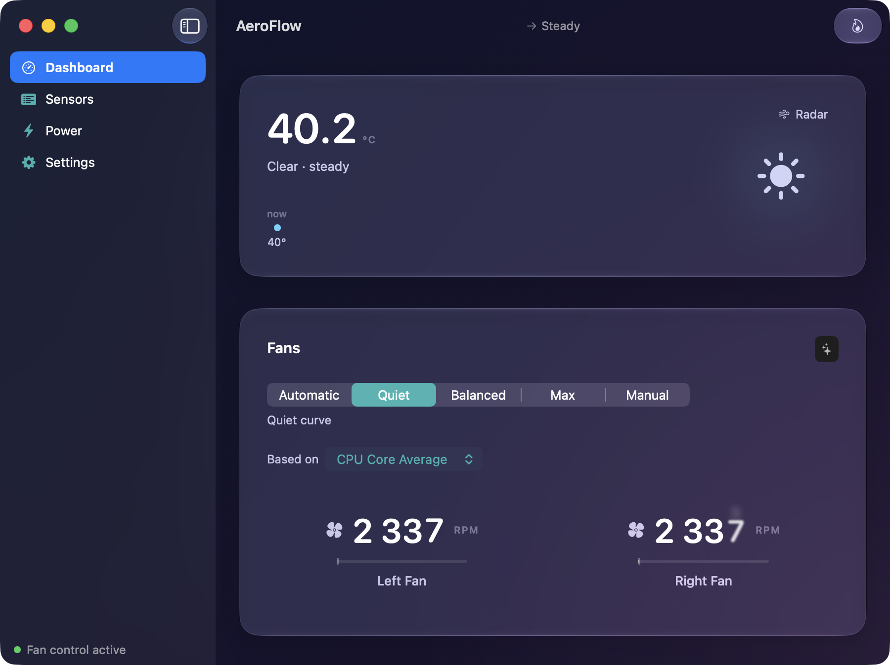

Fan control for the Mac. Quiet, honest, safe.
macOS 14 or later · Apple Silicon & Intel · Signed & notarized · v1.1.0

Live temperature, RPM, and power readings straight from the SMC — dozens of key readings, named and grouped so you know what you're looking at. A weather-style thermal forecast learns your machine's rhythm and tells you where it's heading, not just where it is.
Set constant speeds, engage Turbo, or run a Dust Cycle. Every write is clamped to your hardware's own limits by a privileged helper, a watchdog fails safe back to Apple's automatic control if anything stops responding, and quitting always hands your fans back to macOS. You cannot brick your thermals with AeroFlow.
No dashboards screaming for attention. Motion only comes from your data or your hand, color is reserved for temperature alone, and an idle dashboard costs about 2% CPU. Lives in the menu bar; the window is there when you want depth.
Pay once, get a license key by email, activate in the app. Deactivate any time in Settings to move machines. Offline for a while? Monitoring never locks, and control keeps working through a 14-day grace window.
Checkout and VAT handled by Lemon Squeezy, our merchant of record.
After checkout your license key arrives by email. Open AeroFlow, paste the key, done. The key is checked against the store once a day when you're online; your sensors and readings never depend on it.
Nothing dramatic. Monitoring always works. Fan control keeps working for 14 days without a successful check, which covers any sane trip off-grid.
AeroFlow's helper clamps every command to the limits your Mac's own firmware reports, a heartbeat watchdog restores Apple's automatic control if the app ever stalls, and quitting the app always returns control to macOS. The failure mode is always "Apple drives."
Any Mac on macOS 14 Sonoma or later, Apple Silicon or Intel. On macOS 26 the interface uses true Liquid Glass; on older systems it falls back to native materials.
The app checks a signed update feed and offers new versions in place — standard Sparkle, the same mechanism most respected Mac apps use. No account, no telemetry.
Within 14 days, write us or Lemon Squeezy and it's refunded. Keys from refunded orders are disabled.